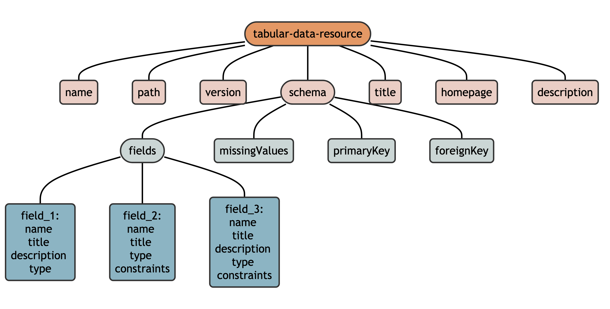

Metadata
Metadata is information about data, but does not contain the data itself. For example, a CSV file cannot tell R (or other software) anything about itself including:
- general information like a name, title, description, license, or related URL
- how missing values are denoted
- column names, titles, types, formats, and constraints
- specific CSV “dialect” characteristics required to read it (e.g. delimiter, encoding, quoting)
CODEC utilizes a specific set of standards to store community-level data in an effort to make them more interoperable and reusable.
Frictionless Standards
Frictionless standards are a set of patterns for describing data, including datasets, files, and tables. These metadata are contained in a specific file (separate from the data file), usually written in JSON or YAML, that describes something specific to each Frictionless Standard.
The CODEC metadata specifications are based on the Tabular Data Resource (often written as ‘tabular-data-resource’ and abbreviated throughout the package as tdr). A tabular-data-resource is made up of three Frictionless Standards:
- Data Resource: describes an exact tabular file providing a path to the file and details like name, title, description, and others
- Table Schema: describes a tabular file by providing its dimension, field data types, relations, and constraints
- CSV dialect: describes the various dialects of CSV files, including terminator strings, quoting rules, escape rules, etc.
A tabular-data-resource consists of (1) a single table of data in a CSV file and (2) its metadata, represented as a hierarchical list in a specific format. On disk, this metadata is stored as a YAML file and in R, it is stored in the attributes of a data.frame (or tibble). 1
Within the context of CODEC, tabular-data-resouce metadata consists of descriptors, schema, and fields:

- a descriptor (or “metadata property”) is a named value stored as a string used to describe the data resource
- the schema (or “table schema”) contains information about each of the fields (or “columns”) within a tabular-data-resource
- schema may optionally contain the value used to denote missingness and which fields are primary keys and foreign keys
CODEC Metadata Specifications
CODEC specifications are versioned according to the {CODECtools} package, so this vignette describes version 0.1. To see older versions of the specification, install an older version of {CODECtools}.
Descriptor, schema, and field values supported by the CODEC metadata specification must be named:
CODECtools::codec_names()## $descriptor
## [1] "name" "path" "title" "description" "url"
## [6] "license" "schema"
##
## $schema
## [1] "fields" "missingValues" "primaryKey"
##
## $fields
## [1] "name" "title" "description" "type" "constraints"CSV files use the defaults for readr::read_csv() and readr::write_csv(), namely:
- encoding
- missing values